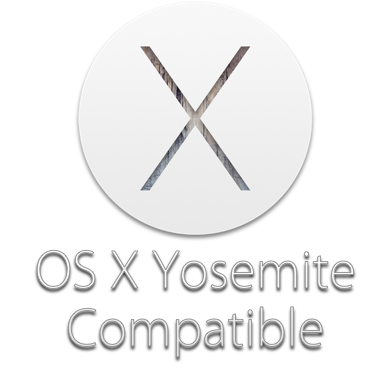
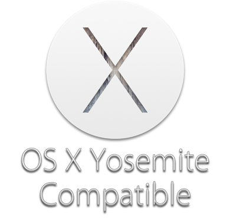

QtPass 1.1
QtPass is a multi-platform GUI for pass, the standard unix password manager.
View the Project on GitHub IJHack/qtpass


Features
- Using pass or git and gpg2 directly
- Cross platform: Linux, BSD, OS X and Windows
- Using native widgets and iconography where possible
- Reading pass password stores
- Decrypting and displaying the password and related info
- Editing and adding of passwords and information
- Updating to and from a git repository
- Per-folder user selection for multi recipient encryption
- Configuration options for backends and executable/folder locations
- Copying password to clipboard
- Configurable shoulder surfing protection options
- Experimental WebDAV support
Installation
Linux
Arch
Latest stable and git on aur.packer qtpassyaourt -S qtpassOpenSUSE & Fedora
Via OBS and Fedora package db.yum install qtpassdnf install qtpassDebian & Ubuntu
In testing, sid and xenial.apt-get install qtpassGentoo
Source build package.emerge -atv qtpassFreeBSD
cd /usr/ports/sysutils/qtpass/ && make && make install cleanTODO more
Windows
Latest stable on the releases page, latest build via AppVeyor.
Via Chocolateychoco install qtpassOSX
Latest stable on the releases page, latest build via AnneJan.
Via Homebrew Caskbrew cask install qtpassDependencies
- QtPass requires Qt 4.8 or later, preferably Qt5.
- The Linguist package is required to compile the translations.
- For use of the fallback icons the SVG library is required.
On most *nix systems all you need is:
qmake && make && make installOn Mac OS X:
brew install qt5
brew link --force qt5
xcode-select --install
qmake && make && macdeployqt QtPass.appCurrently seems to only work with MacGPG2
Security considerations
Using this program will not magically keep your passwords secure against compromised computers even if you use it in combination with a smartcard.
It does protect future and changed passwords though against anyone with access to your password store only but not your keys. Used with a smartcard it also protects against anyone just monitoring/copying all files/keystrokes on that machine and such an attacker would only gain access to the passwords you actually use. Once you plug in your smartcard and enter your PIN (or due to CVE-2015-3298 even without your PIN) all your passwords available to the machine can be decrypted by it, if there is malicious software targeted specifically against it installed (or at least one that knows how to use a smartcard).
To get better protection out of use with a smartcard even against a targeted attack I can think of at least two options:
- The smartcard must require explicit confirmation for each decryption operation. Or if it just provides a counter for decrypted data you could at least notice an attack afterwards, though at quite some effort on your part.
- Use a different smartcard for each (group of) key.
- If using a YubiKey or U2F module or similar that requires a "button" press for other authentication methods you can use one OTP/U2F enabled WebDAV account per password (or groups of passwords) as a quite inconvenient workaround. Unfortunately I do not know of any WebDAV service with OTP support except ownCloud (so you would have to run your own server).
Planned features
- Re-encryption after users-change (optional ofcourse).
- Plugins based on key, format is same as password file.
- Colour coding folders (possibly disabling folders you can't decrypt).
- WebDAV (configuration) support.
- Optional table view of decrypted folder contents.
- Opening of (basic auth) urls in default browser? Possibly with helper plugin for filling out forms?
- Some other form of remote storage that allows for accountability / auditing (web API to retreive the .gpg files)?
Known issues
- Filtering (searching) breaks the tree/model sometimes.
- On Mac OS X only the gpgtools MacGPG2 version works with passphrase or PIN.
FAQ
Can't save a password
- Is folder initialised? Easiest way is to use the [Users] button and make sure you can encrypt for someone (eg. yourself)
- Are you using git? If not, make sure it is switched off.
I have an issue with GNOME keyring
- Disable GNOME keyring
- Create a
~/.gnupg/gpg-agent.confcontaining:
enable-ssh-support
write-env-file
use-standard-socket
default-cache-ttl 600
max-cache-ttl 7200Also, the following is useful to add to your .bashrc if you are using Yubikey NEO on Ubuntu:
# OpenPGP applet support for YubiKey NEO
if [ ! -f /tmp/gpg-agent.env ]; then
killall gpg-agent;
eval $(gpg-agent --daemon --enable-ssh-support > /tmp/gpg-agent.env);
fi
. /tmp/gpg-agent.envCan I import from KeePass, LastPass or X?
- Yes, check passwordstore.org/#migration for more info.
Are there more frequently asked questions?
- Read the current QtPass FAQ.
Where can I ask for help?
- Create an issue issues on github.
- Send an email to help@qtpass.org

 
